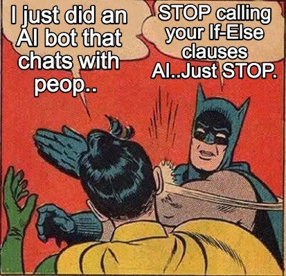
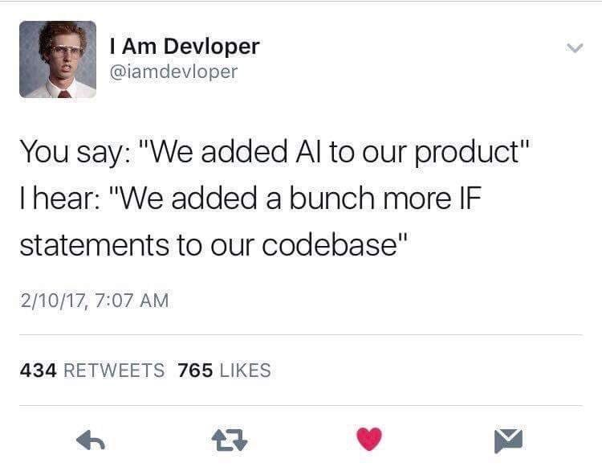
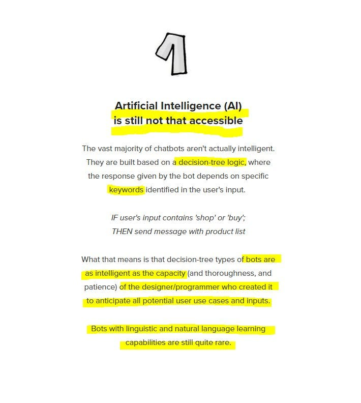
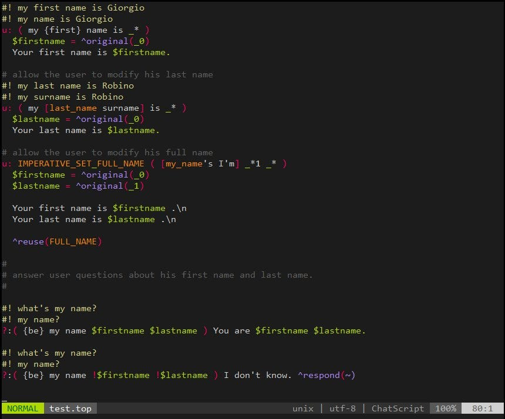

We added AI to our (chatbot) product…
Some misconceptions behind the misused “AI” (in chatbot dev)


As “serious” developers, marketers, startuppers, scientists or whatever,
I think that
we should avoid to use the term “Artificial Intelligence” in chatbot develop realms!
At least nowadays, in 2017, and I explain why in few moments.
The funny statement by @Imdevloper goof about the ridiculous of many companies and people yapping about AI, maybe just because they use a machine-learning-based crowd-sourcing associative map algorithm.
No, please stop to claim your product is AI-based just because you are using intents/entities hash! Come on!
Do not misunderstand me, I have nothing against GREAT API.ai, WIT.ai platforms!❤️
Maybe I’m more perplex with similar followers/copy-catted engines that many startups are using for their chatbots products&services, some time even claiming to have self-made fantastic (and private). That’s often ridiculous!
🤔🤔😲🤐🤐🤐😒😒😒😲🤔😲🤐😒😲
Again, please note I fully respect above mentioned platforms, but please, we can not call all these kind of services or products: ARTIFICIAL INTELLIGENCE!
And yes, I admit, I naively associate in my mind the term AI with a view of a possible machine intelligence, and at least some sort of machine inference and reasoning ability, but that’s so hard to realize with nowadays software “technology” and eventually I become nervous when so much people out talk out of turn about AI.
There is no Artificial Intelligence in our today software, in planet Earth.

To rule or not to rule? A minor digression
Secondly that’s a sub-subject of the funny mentioned tweet: in #botdev realms rule-based engines seem evil or old-fashioned tech, at least among some gurus of esoteric (and often closed-source) “cognitive” technologies (never mind business strategies…).
In any case, there is also a lot of confusion of what rule-based means.
On one side some people use this term referring to chatbots where logic is hard-coded on a software application realized in traditional programming languages:
if (user say *) then
...
if (user say *) then
...
if (user say *) then
...
if (user say *) then
...
if (user say *) then
...
end
end
end
end
end
Someone call “Pyramid of Doom” the nefarious effects of this approach.
See my inside about Alex Bunardzic speech at last #CBC16 event in 2016 https://convcomp.it/sullevento-chatbotconf-2016-di-vienna-23cde4b1b320 (sorry for Italian, but please read Alex slides/video).
And yes, as a long term dev-strategy, hard-coding dialog flow logic with standard code (Javascript, Ruby or any “trad” programming language you prefer) is not a suitable way to develop complex chatbots, for many reasons out of scope here, but just to mention few: difficult maintenance, no separation between dialog flow editing and back-end subsystems (but that’s could be also a pro, in case of super-high performance dumb-bots, as a payment system).
Even if I admit, nowday successful chatbots are realized with traditional code approach (as far as I know, one of my preferred and successful, Matty Mariansky’s Meekan, is a Python-based software).❤️
That said, in my mind when I think about a rule-based system I instead thing about an inference engine (maybe I’m old and come in my mind seventies expert systems), or more pragmatically I think about chatbot scripting languages&engines that allow to
design dialog flow with a script metalanguage❤️❤️❤️
BTW, My preferred example of such a system is grandfather ChatScript.

All in all, I invite all you, AI-experts, to review a bit all these big AI-statements, maybe trying to go back, with modesty, to “old-fashioned” decades of studies of natural language understanding (#NLProc).
You can not easily automatize semantics of a human-to-human (or human-to-bot or bot-to-bot) complex conversation with your start of the art ML-blackboxes.
But now,
let me go back reading my “Italian grammar for dummies” elementary school book…❤️